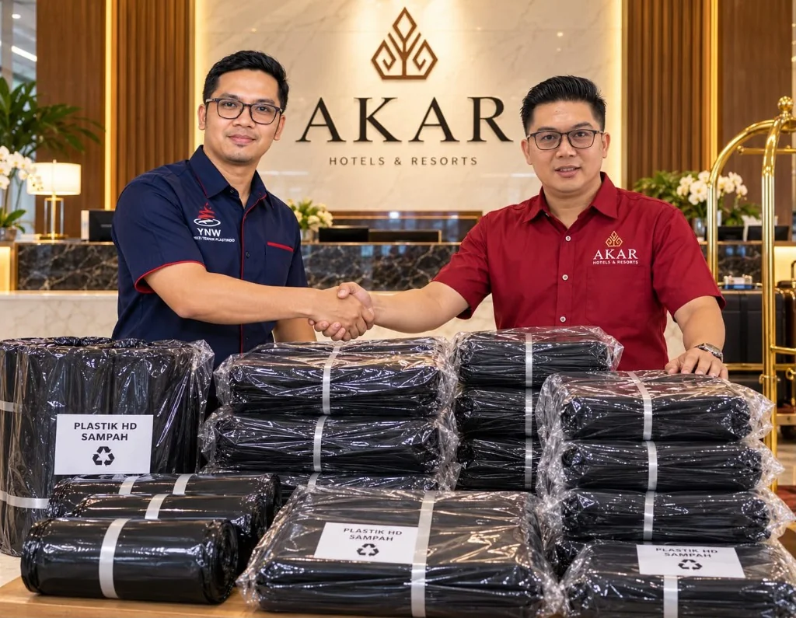
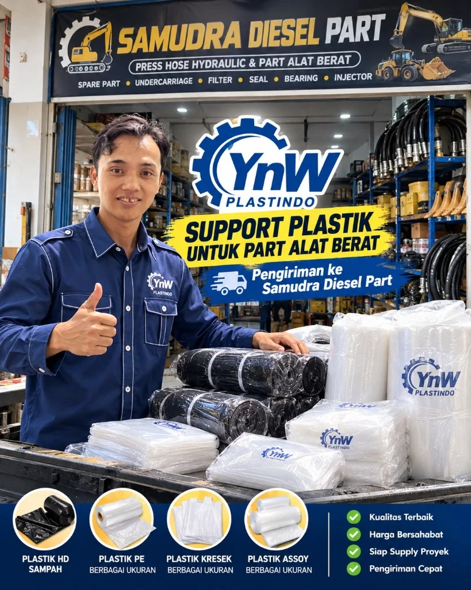
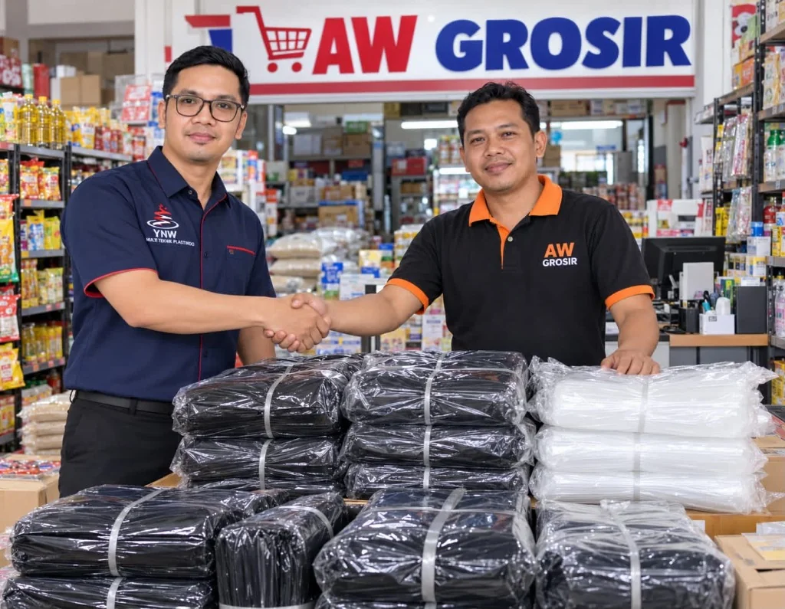

Kantong Sampah Besar, PE Bening, Kresek, Mulsa & Selang Pertanian
Kami memproduksi dan mendistribusikan aneka produk plastik berkualitas unggul dengan merek resmi YnW Plastindo. Menyediakan pasokan partai besar, bal-balan, maupun suplai berkala: Kantong Sampah Besar berbagai ukuran (40x60 hingga 90x120 cm), Plastik PE (1/4, 1/2, 1 kg), Plastik Kresek, Mulsa Pertanian, dan Selang Irigasi Pertanian di Lampung dan seluruh Indonesia.
Dibuat dari material plastik HD tebal berkualitas tinggi, liat, tidak mudah robek, dan kedap cairan. Dirancang khusus untuk menampung volume limbah besar pada tong sampah luar ruangan (outdoor), tempat sampah beroda (wheelie bin), serta area komersial perhotelan, kantor, pabrik, restoran, dan perumahan.
Kantong sampah hitam pekat kualitas prima, tebal, liat, dan anti-bocor. Sangat pas untuk kebutuhan tong sampah besar ruangan, drum, maupun tempat sampah beroda di perhotelan, kantor, fasilitas medis, dan industri.
Kantong kresek belanja berkualitas tinggi, pegangan kuat, tidak berbau, lentur, dan tahan beban berat. Tersedia berbagai ukuran dan warna untuk kebutuhan toko grosir & ritel.
Kantong plastik PE bening elastis kualitas premium. Tahan minyak, santan, dan suhu beku, sangat higienis untuk kemasan makanan, minuman, dan kebutuhan rumah tangga.
Plastik mulsa hitam perak untuk bedengan pertanian hortikultura (cabai, semangka, tomat, dll). Berfungsi menjaga kelembapan tanah, memantulkan sinar matahari, dan menekan pertumbuhan gulma.
Selang plastik irigasi dan fertigasi lahan pertanian. Fleksibel, tahan tekanan air, tahan paparan sinar UV matahari, dan mempermudah distribusi air ke seluruh area kebun/sawah.
PT YnW Multi Teknik Plastindo menjamin pasokan produk plastik tangan pertama dengan kontrol kualitas yang ketat:
Produk plastik kami telah digunakan dan dipercaya oleh berbagai industri di wilayah Lampung — mulai dari perhotelan berbintang, toko grosir, hingga sentra bengkel dan suku cadang alat berat.

Kuat, tidak mudah sobek, tahan rembes, dan bersertifikasi daur ulang ramah lingkungan untuk operasional kebersihan hotel dan resort.

Plastik PE tebal, assoy, kresek, dan roll penutup untuk melindungi komponen baja, hose hidrolik, dan bearing dari debu dan kelembapan.

Penyediaan puluhan hingga ratusan bal plastik kresek, kantong HD, dan plastik bening PE untuk perputaran ritel dan grosir komersial.

Kantong plastik HD tebal untuk limbah filter, oli, dan kemasan pembungkus sparepart motor agar workshop tetap bersih dan higienis.